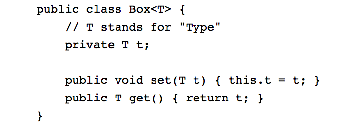
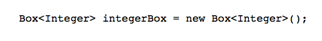
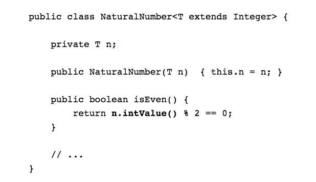

Generics, Android and You.
Who am I?
Why this talk?
- Getting up and running with Android is "easy."
- But once you're started it's more fun to build stuff than read the documentation.
Who are you?
I don't know...
Let's divide you up:
- Generics are new to you and you're ready to hear more.
- Then just don't leave the room.
- You're an expert on generics and worried about wasting your time.
- Pop quiz: http://bit.ly/24kDOku
Generics...
- were introduced in J2SE 5.0 (September 2004)
What can generics do for you?
- They add type checks at compile time.
- They can help you avoid casting.
- They allow you to write generic algorithms that work on collections of different types.
Source: Java™ Documentation
Bare Bones Example:
And you must specify T when you invoke the generic class:
With Box<T>, T could be just about anything.
A more useful situation is where you restrict T:
By restricting T to subclasses of Integer, you get access to all the methods of Integer.
Now what do generics do for you?
You can see them in the android documentation.
Or can you?
Of course you can.
You'll just not see the word "generic."
...
Additional Reading:
Hopefully this has been an exciting toe-dip into Java generics.
I'm a gigantic dork and can be found on twitter: